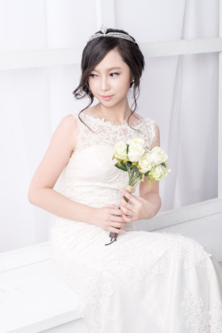

 Varför välja Freya Photos för er bröllopsfotografering? Freya Photos är kända för sin förmåga att fånga de mest minnesvärda ögonblicken i livet. Med en passion för kreativitet och ett öga för detaljer, strävar de efter att skapa bilder som berättar en historia och väcker känslor. När ni anlitar Freya Photos för er bröllopsfotografering, kan ni vara säkra på att ni får en engagerad partner som är dedikerad till att fånga era mest värdefulla ögonblick på det mest vackra och minnesvärda sättet. Låt Freya Photos hjälpa er att bevara era minnen för alltid med bilder som ni kommer att älska och dela med era nära och kära. Välj Freya Photos – för att varje ögonblick är värt att minnas.